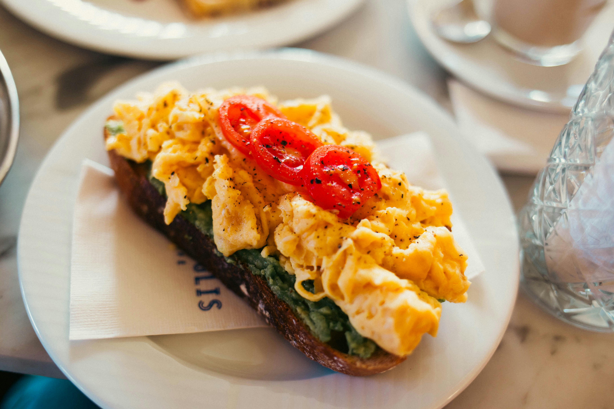

Scrambled eggs
Recipes
Scrambled eggs

The Unofficial Guide to Scrambled Egg Supremacy
Listen up, breakfast warriors. We need to talk about scrambled eggs – the unsung heroes of the morning meal, the golden gods of the frying pan, the fluffy champions that have been saving our souls since approximately 6 AM began existing.
I'm not saying scrambled eggs are better than winning the lottery, but have you ever tried to eat a lottery ticket? Exactly. Scrambled eggs win by default.
These magnificent blobs of protein perfection take less time to make than it takes to argue with your alarm clock. We're talking 5 minutes max – which is basically the culinary equivalent of teleportation. You could literally scramble eggs in the time it takes most people to decide what socks to wear.
Ingredients
What You Actually Need (Serves 1-2 Normal Humans):
6-8 eggs - Fresh ones work best, but we're not judging your grocery shopping timeline
2-3 tablespoons butter - Because life's too short for margarine lies
Salt - A pinch, unless you're feeling rebellious
Black pepper - Freshly cracked if you're fancy, pre-ground if you're honest
2-3 tablespoons milk or cream - Optional, but recommended for maximum fluffiness
HOW TO DO IT step by step
The Sacred Ritual (Total Time: 5 Minutes of Glory):
- Step:
Crack those eggs into a bowl like you mean it. If you get shell pieces, fish them out – nobody needs that kind of drama in their breakfast. Add milk/cream, salt, and pepper. Whisk until everything's best friends.
- Step:
Heat your pan over medium-low heat. Yes, medium-low. I know you want to crank it to high because you're hungry, but patience, grasshopper. Add butter and let it melt into golden glory.
- Step:
Pour in your egg mixture. Now comes the hard part - do absolutely nothing for about 30 seconds. Resist the urge to poke, prod, or helicopter parent your eggs.
- Step:
Gently push the cooked edges toward the center with a spatula, tilting the pan to let uncooked egg flow underneath. Repeat this dance of culinary excellence every 30 seconds or so.
- Step:
When the eggs look almost set but still slightly wet (they'll finish cooking from residual heat), remove from heat. This is called "carryover cooking" – use this term to sound sophisticated at brunch.
- Step:
Plate immediately and consume while questioning why you ever thought instant oatmeal was acceptable. Congratulations, you've achieved breakfast enlightenment.
- Pro Tip:
If someone asks for your secret, just smile mysteriously and say "low and slow." They'll think you're a culinary genius, and technically, you're not wrong.
ENJOYYYY!!!!!!